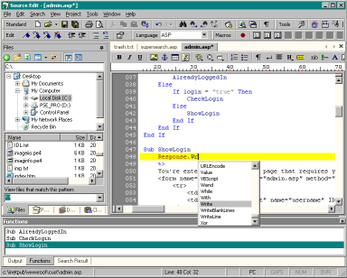

1 Nov 2003
1 Nov 2003
First Posted

Brixoft SourceEdit - an extensible, multi-language programmers editor
Source Edit is an editor for developers which can of course be used as a regular text editor. It provides native supports for a whole range of programming languages, including ASP, PHP, Java, C/C++, C#, Visual Basic, Pascal, Perl, Cold Fusion, SQL, HTML, CSS and XML, and can be customised to support new languages using a Language Editor.
Source Edit's facilities include code colouring, Intellisense-style code completion, language-specific context sensitive help, a full hex editor, reading and writing directly to an FTP server and many other powerful features.
Using vbAccelerator Controls
Source Edit uses the MDI Tabs Control to automatically convert an MDI application into a VS.NET style tabbed interface.
The Site
Brixoft's site and the Source Edit software can be found at http://www.sourceedit.com/.